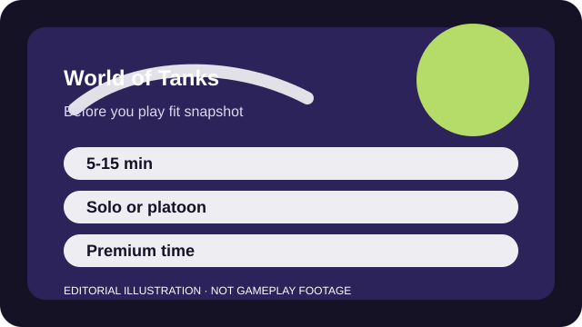

BEFORE YOU PLAY
What this page is and is not
This is a sourced editorial fit profile. It is designed to help with a yes-or-no play decision, and it does not claim a scored hands-on review.
The crucial fit question is whether patient setup and information denial sound fun. If you want immediate flanking speed, the pace can feel restrictive no matter how much you like tanks.
The first-session loop to judge is simple: Use armor, vision, and map lanes well enough to win a few decisive engagements and keep a tank line progressing.
Grinding new lines, crews, and vehicle mastery is central to the long-term loop.

FIT SNAPSHOT
World of Tanks at a glance
| Genre | Vehicle combat |
|---|---|
| Platforms | PC, Console editions, Mobile variants |
| Business model | Free-to-play vehicle combat game with premium time, convenience offers, and optional vehicle purchases. |
| Typical session | 5-15 minute matches that can quietly chain into longer progression sessions. |
| Play style | slow tactical team combat |
| Learning barrier | Armor angles, view range, map lanes, and class roles all matter enough that early matches can feel harsh without context. |
| Social shape | The game is playable solo, though platoons make focus fire and map control easier to coordinate. |
WHO IT FITS
Best fit, likely friction, and the social reality
players who like slow tactical vehicle combat, spotting mind games, and historical machine flavor
players who want fast twitch movement or a very simple free-to-play economy
The game is playable solo, though platoons make focus fire and map control easier to coordinate.
Grinding new lines, crews, and vehicle mastery is central to the long-term loop.
FIRST SESSION PLAN
How to test the fit in one evening
- Start with one nation and one class so the tech tree stays understandable.
- Learn spotting and basic lane discipline before chasing damage numbers.
- Watch how armor angles worked after each death instead of writing losses off as matchmaking alone.
- Avoid buying premium vehicles until the base pace and economy truly click for you.
Use the first session to answer these fit questions instead of judging rank, win rate, or store value immediately.
- Do you enjoy slow map control and information games more than rapid flanking speed?
- Will convenience offers bother you if the base tactics are excellent?
- Are vehicle classes and historical flavor more appealing than hero abilities or pure infantry shooters?
TIME, COST, AND COMMITMENT
What you are really signing up for
| Session budget | 5-15 minute matches that can quietly chain into longer progression sessions. |
|---|---|
| Social demand | The game is playable solo, though platoons make focus fire and map control easier to coordinate. |
| Progression shape | Grinding new lines, crews, and vehicle mastery is central to the long-term loop. |
| Spending pressure | Core access is free, but premium time, convenience, and vehicle offers are part of the live economy pressure. |
Matches are fairly short, but understanding lines, crews, and the economy turns it into a bigger hobby over time.
Core access is free, but premium time, convenience, and vehicle offers are part of the live economy pressure.
SOURCES AND LIMITS
What was checked, and what can change
- Vehicle balance and tech-tree routes can change which lines are easiest for newcomers.
- Event progression can temporarily increase grind or reward pressure.
- Premium offers and time savers move more often than the core tactical pacing.
This profile uses official game pages and defensible general product knowledge to frame the player fit. It does not claim live testing across every platform, accessibility need, or current event rotation.